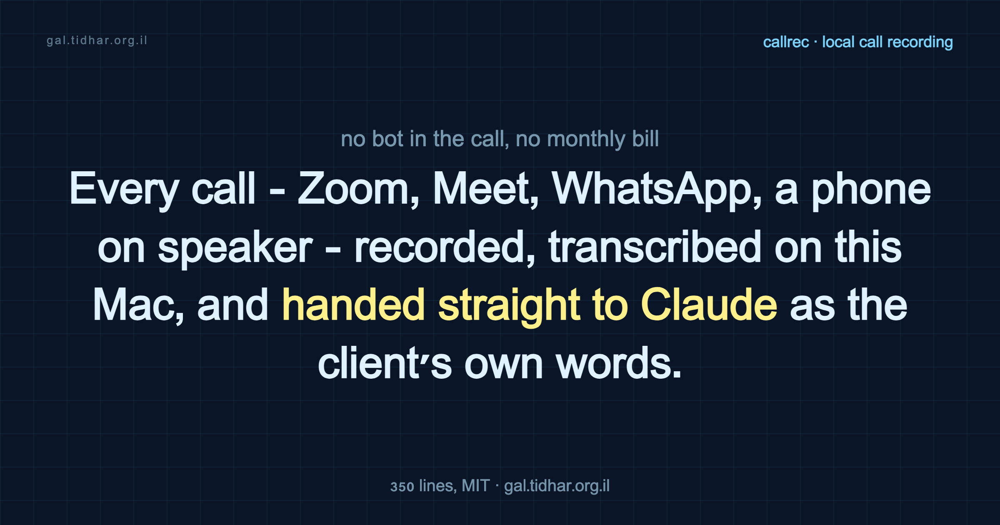

callrec · BlackHole · whisper.cpp · Claude Code
Record any call on a Mac or PC and transcribe it locally, no subscription
Every meeting-bot tool I looked at wants to join your call as a participant, upload the audio to someone's cloud, and bill you monthly forever. Mine does none of that. It records whatever is making sound on the Mac - WhatsApp, Meet, Zoom, a phone held up to the laptop mic - with nothing leaving the machine and nothing to cancel, then transcribes it locally so you're left with a plain text file instead of a memory you half-invented afterward. There's a Windows build too, and it's smaller, because most of what follows is a workaround for something Windows never broke.

The category I ruled out first
I wanted to record calls and went looking for a tool. I found a category instead: a bot that joins your meeting, uploads the audio to someone's cloud, sends you a summary, and charges monthly forever.
That fails in three ways at once. It doesn't work on WhatsApp, or on a phone call held up to the laptop mic, or on anything that isn't a browser-based meeting. It's another subscription in a stack that already has too many. And it means telling whoever's on the other end that a third party is listening in. So I built the thing that does none of that: it runs entirely on my laptop, it doesn't care what app made the sound, and there's nothing to subscribe to.
The one thing macOS won't do
Here's the wall everyone hits, and it's worth understanding because it explains the whole shape of the solution.
macOS lets you record inputs. Microphones, line-ins, anything the system classifies as a capture device. Your speakers are an output, and there is no API that hands you the audio going to them. This isn't an oversight - it's a deliberate boundary, and it's why every screen recorder for a decade shipped with "system audio not supported."
So you record what you can (your own microphone) and you get a transcript of a monologue. Useless. The half of the conversation worth keeping is the other person's.
The way around it is a virtual audio driver: a fake sound card that accepts output and re-presents it as an input. BlackHole is the good free one - a 2-channel HAL driver, open source, one Homebrew cask.
brew install --cask blackhole-2ch
sudo killall coreaudiod # it won't appear until CoreAudio restartsNow your Mac has a device that is simultaneously a place to send sound and a place to record it from. The rest is plumbing.
Recording is one ffmpeg command
Two inputs, one mixed track:
ffmpeg -f avfoundation -i ":$MIC" -f avfoundation -i ":$BLACKHOLE" \
-filter_complex "[0:a][1:a]amix=inputs=2:duration=longest:dropout_transition=0[a]" \
-map "[a]" -c:a aac -b:a 64k call.m4aamix folds you and them into one mixed mono track. That's the right trade for transcription and the wrong one for editing - if you want the speakers separated, record two files and diarize afterwards. I wanted words, so: one track, 64kbps, an hour of call is about 28MB.
Transcription is one more
whisper.cpp is a C++ port of OpenAI's Whisper that runs on Apple Silicon's GPU through Metal:
brew install whisper-cpp
whisper-cli -m ggml-large-v3-turbo.bin -f call.wav -l auto -otxt-l auto is the part that made this viable for me. My calls slide between Hebrew and English mid-sentence, and the large-v3-turbo model detects language per segment rather than forcing one language on the whole file. A six-second clip transcribes in about two seconds on an M4. The model is a 1.6GB download, once. After that you're offline forever.
The part that would have killed it
Here's where a weekend project usually dies.
Sending audio to BlackHole means making it your output device - which means you can't hear anything, because the sound now goes into a virtual sink instead of your speakers. The fix is a Multi-Output Device: a fake device that fans one stream to several real ones. You build it by hand in Audio MIDI Setup, tick your speakers and BlackHole, and select it before each call.
And then you don't. Because you have to remember to select it, remember to switch back after, and while it's selected your volume keys stop working - Multi-Output Devices have no master volume. Three weeks of that and the tool is dead.
So the script owns the switch. callrec start sets the output device to the multi-output and callrec stop puts back whatever you had. Both are a dozen lines of CoreAudio.
The device itself is worth a footnote, because it isn't in the docs anywhere obvious: a Multi-Output Device is just an aggregate device with kAudioAggregateDeviceIsStackedKey set to 1. Which means you can create the thing programmatically instead of asking a user to click it together in Audio MIDI Setup:
let desc: [String: Any] = [
kAudioAggregateDeviceNameKey as String: "Call Capture",
kAudioAggregateDeviceIsStackedKey as String: 1, // stacked == Multi-Output
kAudioAggregateDeviceIsPrivateKey as String: 0, // persists across reboots
kAudioAggregateDeviceMasterSubDeviceKey as String: speakersUID,
kAudioAggregateDeviceSubDeviceListKey as String: [
[kAudioSubDeviceUIDKey as String: speakersUID, kAudioSubDeviceDriftCompensationKey as String: 0],
[kAudioSubDeviceUIDKey as String: blackHoleUID, kAudioSubDeviceDriftCompensationKey as String: 1],
],
]
AudioHardwareCreateAggregateDevice(desc as CFDictionary, &newID)Real hardware is the clock master; drift correction goes on the virtual device, which has no crystal of its own and will slowly slide out of sync without it.
A dot in the menu bar
The CLI was enough for me and not enough for anyone else, so there's a menu bar app: click the dot, type who the call is with, talk, click again. It's one Swift file, 160 lines, built with swiftc - no Xcode project, no storyboard, no dependencies. An .app bundle is a folder with a binary and an Info.plist; codesign -s - with a fixed identifier is enough to keep the microphone permission across rebuilds.
Why any of this - memory is a reconstruction
Your memory of a conversation is not a recording of it. It's a summary, written afterward, by someone with an interest in the story making sense. Details get sanded down, sequence gets rearranged, and the exact words - which are usually the part that mattered - get replaced with your paraphrase of them, which you then trust as if it were the original.
That's fine for small talk. It's not fine for an interview, a standup where someone committed to a date, a lecture you want to study from later, a call with a supplier about what they actually promised, or a doctor's appointment where the exact wording of the instructions matters. In all of those, the other person's exact words matter more than your recollection of them. A transcript doesn't have an interest in the story making sense. That's the whole reason this exists.
Where the transcript goes
The recording was never the point. The point is what you can do with a plain .txt file once you have one.
callrec drops each transcript in ~/Calls as plain text, named by date and whoever you typed in when you hit record. Nothing proprietary, nothing in a database - just a text file, which means it slots into whatever you already use. Pipe it into Claude Code or another LLM and ask it to summarise action items, pull out decisions, or turn a rambling call into three bullet points. Drop it into a notes app and let full-text search do the work of remembering which call something was said on. Or just grep across ~/Calls when you vaguely recall a phrase and want to find the conversation it came from.
None of that needs a system. It needs the file to exist and to be searchable, and a .txt file already is.
Windows doesn't need any of this
Someone asked for a Windows version, and the interesting part is what disappears.
Everything above exists because macOS refuses to let a program read an output device. That single refusal is why BlackHole has to exist, why there's a Multi-Output Device, and why callrec has to hijack your default output on start and hand it back on stop. Windows never made that decision. WASAPI loopback has let any program open a render endpoint and read what's playing through it since Vista.
So the Windows build has no driver, no virtual cable, no aggregate device, and it changes nothing about your sound settings. You keep hearing the call. The volume keys keep working - the one limitation I have to live with on the Mac just isn't there.
What surprised me was how hard the internet argues for the opposite. Nearly every "record system audio with ffmpeg on Windows" answer tells you to install a DirectShow filter called virtual-audio-capturer and register it system-wide. It's an unsigned COM DLL whose last real work was around 2015, with an open issue for the device simply not being found and another, from November 2025, for EasyAntiCheat flagging it as malicious. It wraps the same WASAPI call underneath. For a tool whose whole point is not needing someone else's software, registering an abandoned unsigned filter to reach an API that's already sitting there would be a strange trade.
ffmpeg can't do it alone either - it has no WASAPI input device, and the ticket asking for one is still open. Its only Windows audio input is DirectShow, which enumerates microphones, not speakers. So something has to make the call. Here that something is 70 lines of C# over NAudio, compiled at install time by the C# compiler that already ships inside Windows. No SDK, no build tools, no admin rights, nothing registered system-wide. Uninstalling is deleting a folder.
One trap is worth writing down, because it's invisible until it isn't. WASAPI loopback delivers nothing at all while the output device is idle - not buffers of silence, nothing. A quiet minute doesn't arrive as a minute of silence, it doesn't arrive. Every word after it lands a minute early against the microphone track, and the two sides walk away from each other. You won't catch it in a ten-second test. You catch it an hour into a real call when the transcript quietly stops matching reality. The fix is to play silence through the device for as long as you're recording, so it never goes idle.
Limits, stated plainly
- Consent. Tell people you're recording. Some jurisdictions need every party's consent, some need one, and none of them care that the tool made it easy.
- One mixed mono track. You and the other party are folded into a single channel. Fine for a transcript, useless if you need to know who said which line without listening back.
- Bluetooth headphones will fight you. A Multi-Output Device wants a stable clock; Bluetooth's own buffering and reconnect behavior does not cooperate cleanly with an aggregate device.
- Apple Silicon assumed. The Metal-accelerated whisper.cpp path is what makes six-second transcription latency and offline large-v3-turbo practical. Intel Macs are not the target.
- The Windows build is unverified. It compiles and it parses; it has never captured a single second of audio. Treat it as a design that's ready to be tested, not as a thing that works.
It's 350 lines, and the Windows one is shorter
On the Mac: a 72-line bash script, a 160-line Swift file for the menu bar, and two CoreAudio utilities under 120 lines together. On Windows it comes to about 250 lines, and it's shorter for the reason the whole post is about - most of the mac code exists to work around a restriction Windows doesn't have. Either way nothing leaves the machine, nothing runs monthly, and it doesn't care what you're calling on: Zoom, Meet, Teams, WhatsApp, a phone on speaker, a YouTube video you want notes from. If it makes sound on the machine, it gets recorded.
Everything referenced here
Both builds are in the same repo. If you're on Windows, start with the testing notes - they say what's verified, what isn't, and where it will most likely break.